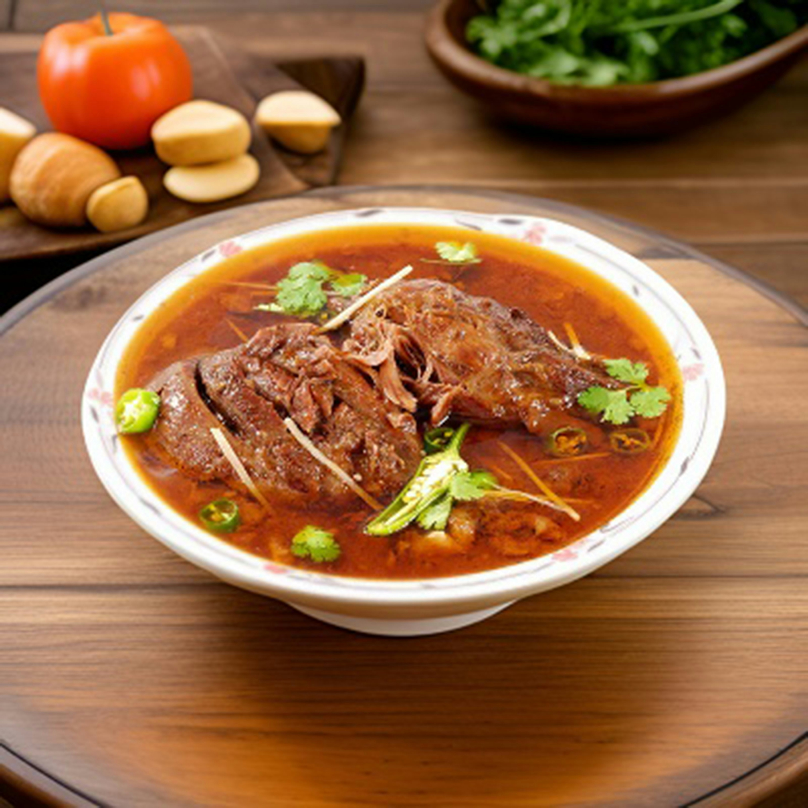

Nihari

Description
Nihari is a traditional South Asian slow-cooked stew known for its rich flavor, tender meat, and aromatic spices.
It is usually made with beef or mutton and cooked for several hours until the meat becomes soft and the gravy develops a deep, flavorful taste.
Nihari is commonly enjoyed as a breakfast dish and is often served with naan, fresh ginger, coriander, and lemon.
Ingredients
- 1 kg beef or mutton (with bones preferred)
- 4 tablespoons cooking oil or ghee
- 2 onions, thinly sliced
- 2 tablespoons ginger-garlic paste
- 1 cup yogurt
- 3 tablespoons wheat flour (for thickening)
- 1 teaspoon turmeric powder
- 2 teaspoons red chili powder
- 2 teaspoons coriander powder
- 1 teaspoon cumin powder
- 1 teaspoon garam masala
- 1 teaspoon fennel seeds
- 1 teaspoon black pepper
- 2-3 cloves
- 2-3 cardamom pods
- 1 cinnamon stick
- 2 bay leaves
- Salt to taste
- 5-6 cups water
- Fresh ginger, sliced (for garnish)
- Fresh coriander leaves (for garnish)
- Green chilies (for garnish)
- Lemon wedges (for serving)
Steps to Follow
- Heat oil or ghee in a large pot and fry the sliced onions until golden brown.
- Add cloves, cardamom, cinnamon, bay leaves, and fennel seeds. Cook for a few seconds until fragrant.
- Add ginger-garlic paste and cook until the raw smell disappears.
- Add the meat and fry until it changes color and becomes slightly browned.
- Add turmeric, red chili powder, coriander powder, cumin powder, black pepper, and salt. Mix well.
- Add yogurt and cook until the oil starts separating from the spices.
- Pour in water, cover the pot, and cook on low heat for 4-5 hours until the meat becomes tender.
- Mix wheat flour with some water to make a smooth paste.
- Add the flour mixture to the nihari and cook for another 10-15 minutes until the gravy thickens.
- Sprinkle garam masala on top and turn off the heat.
- Garnish with fresh ginger, coriander leaves, and green chilies.
- Serve hot with naan, lemon wedges, and extra garnish.
Go Back to Home Page